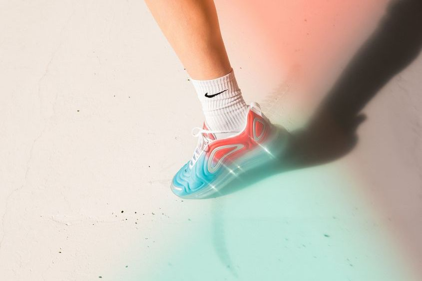
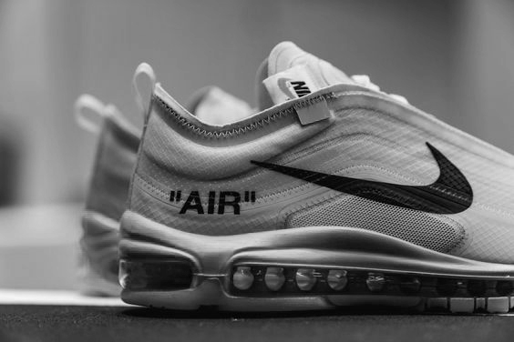

Fra arbejdssko til allemandseje
Gummisko er blevet produceret siden 1800-tallet, dengang blevet skoene primært brugt af arbejdsmænd, fordi skoene var lettere end arbejdsstøvler.
Det der i første omgang egenligt “bare” skulle være en praktisk sko til arbejde og sportsudøvere, blev pludselig en sko til alle, her spiller nogle meget velkendte brands ind, nemlig Converse og Adidas. Begge startede med at producere sko til henholdsvis indendørsfodbold og gymnastik, modeller der den dag i dag, betragtes som klassikere nemlig Adidas’ “Gazelle” og Converses “Chuck Taylors”.

Air Jordans
Hypen omkring sneakers steg for alvor tilbage i 90’erne hvor Nike lancerede det første par “Air Jordans” i samarbejde med basketballstjernen Michael Jordan, den mest berømte sneaker nogensinde, herefter efter steg interessen for gummiskoene voldsomt og igennem 00’erne er markedet kun blevet større i takt med internettets succes.

Sneakerens udbredelse i dag
I dag er interessen global og der findes millioner af blogs, websites, instagramprofiler og lignende som udelukkende handler om sneakers.
Der er mange tusinder af udbydere på markedet, dog er det stadig de gamle spillere, som Nike, Adidas, Reebok, Vans, Converse osv. som præger markedet. Mange af de sneakers der blivet solgt i dag, er ældre modeller som er blevet relanceret og måske har fået en lille opdatering.
Men en ting er helt sikkert, sneakeren er kommet for at blive.